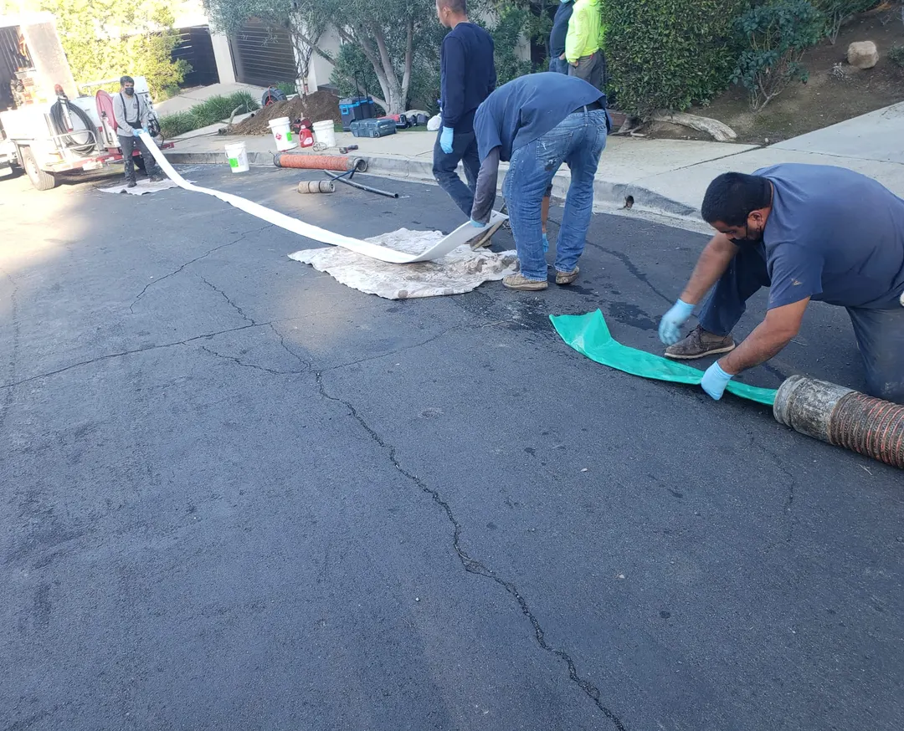
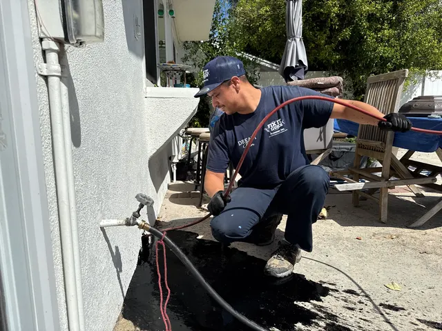
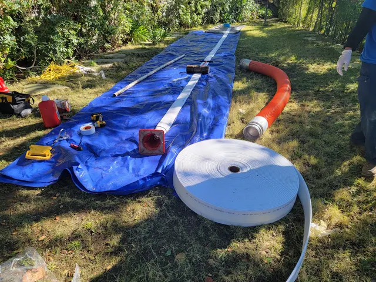
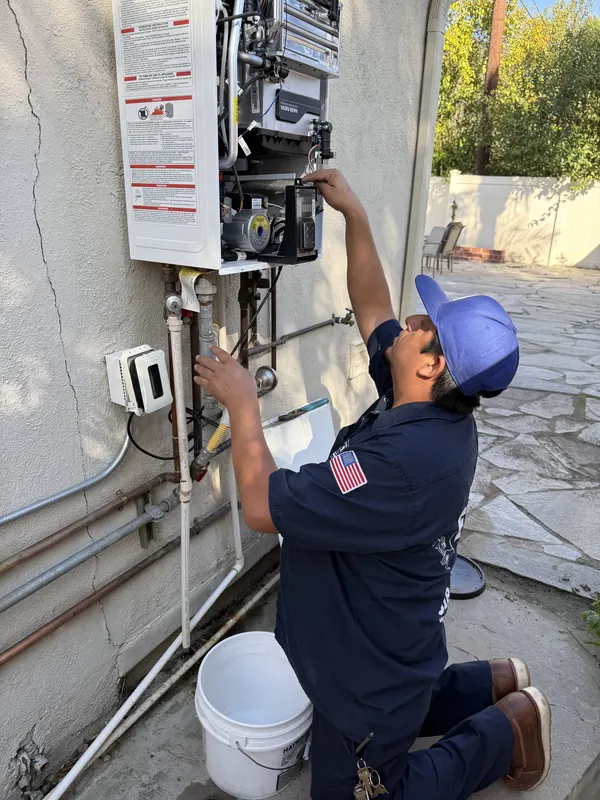
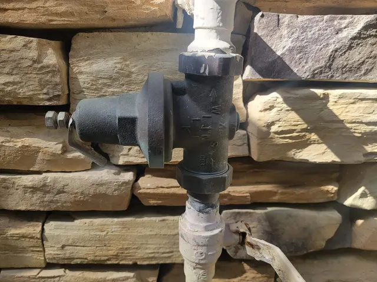
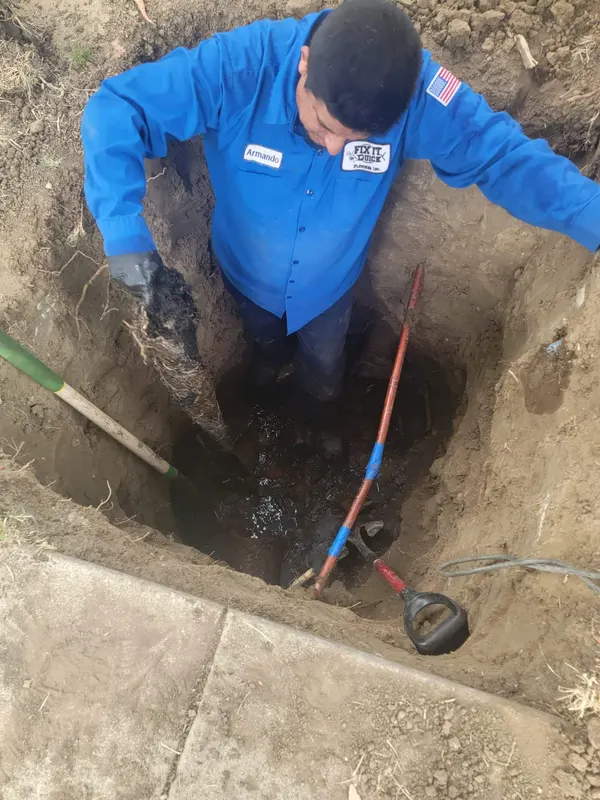

Fix It Quick Plumbing
Canoga Park, CA · CSLB Lic. #1022969 (C-36 Plumbing)
Sewer lines replaced without tearing up the yard, plus drains, water heaters and repipes for homes across the San Fernando Valley.
Free estimates. Emergency calls 24/7.






What we do
Most of our work is underground: sewer lines that are cracked, full of roots or backing up. We also handle the plumbing inside the house, from water heaters to whole-house repipes.
- Trenchless sewer repair
- Pipe bursting pulls a new line through the old one. Epoxy lining seals the old pipe from the inside. Either way, small access pits instead of a trench across the yard. More on trenchless sewer repair →
- Sewer camera inspection
- A camera down the line shows where it's broken, so you're not paying to guess.
- Sewer and drain cleaning
- Main line cleaning, drain cleaning and hydro jetting for roots, grease and buildup.
- Water heaters
- Tank and tankless installs and replacements. More on water heaters →
- Gas lines
- New gas lines and gas line repairs.
- Repiping
- Whole-house repipes in copper or PEX.
- Fixtures and installs
- Shower valves, toilets and new plumbing installs, including ADU construction plumbing.
- Emergencies
- Burst pipes, a backed-up sewer, a leaking water heater. Call (818) 270-4978, day or night.
How a sewer job goes
You see the problem on camera before anyone talks about price.
- You call, we come out.The estimate is free.
- We run a camera down the line.You see where it's cracked, collapsed or full of roots.
- You get your options and a price.Cleaning, a spot repair, lining or a full replacement, depending on what the camera shows.
- We do the work with as little digging as possible.Small access pits instead of a trench through the yard or driveway.
What customers say
Your Google review here, word for word.
Your Google review here, word for word.
Your Google review here, word for word.
The crew that shows up
Fix It Quick Plumbing is a Canoga Park plumbing company. The people in matching shirts in front of the yellow truck are the ones who dig the pits, run the camera and pull the new line.
- CA license
- C-36 Plumbing #1022969
- On the license
- Armando Castaneda
- Based in
- Canoga Park, CA
- Google rating
- 5.0 (205 reviews)
- Payment
- Cash, check or credit card

Where we work
Based in Canoga Park, serving the San Fernando Valley.
- Canoga Park
- Winnetka
- West Hills
- Woodland Hills
- Chatsworth
- Reseda
- Tarzana
- Encino
- Northridge
- Porter Ranch
- Granada Hills
- Calabasas
- Hidden Hills
- Bell Canyon
- Lake Balboa
- Van Nuys
- Sherman Oaks
- Studio City
- North Hollywood
- Burbank
- Glendale
- Mission Hills
- Sylmar
- Sunland-Tujunga
Not on the list? Call and ask. The Valley is a big place.
Questions people ask
Not sure what you need? Call and describe it. Estimates are free.
Do you have to dig up my yard to replace the sewer line?
Usually not. Pipe bursting and pipe lining both work through small access pits, so the lawn, driveway and landscaping mostly stay where they are. The camera inspection tells us which method fits your line.
What's the difference between pipe bursting and pipe lining?
Pipe bursting breaks the old pipe apart while pulling a new one into its place. Pipe lining coats the inside of the old pipe with epoxy, which seals cracks and gaps and leaves you with a smooth new inner wall.
Are estimates free?
Yes. Call (818) 270-4978 or send the form below.
Do you take emergency calls?
Yes, 24/7. Call (818) 270-4978.
Do you offer financing?
Get a free estimate
Call, or leave your details and we'll call you back.
(818) 270-4978Emergency calls 24/7. Serving the San Fernando Valley.